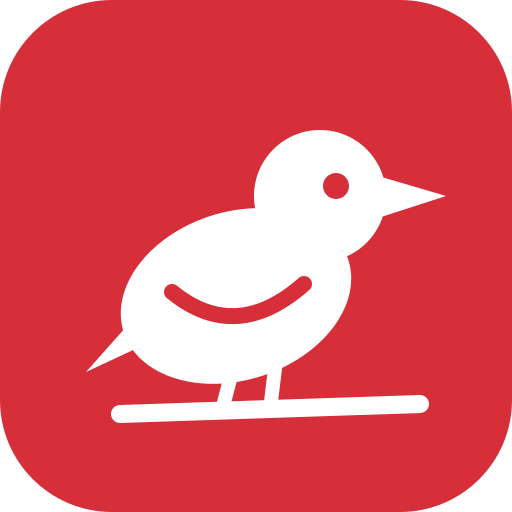

Looper MP3
Salvati su questo dispositivo
Trascina qui un file audio oppure usa “Apri file…”
BPM
Tempo in chiave
Funziona con i brani a tempo costante. Se il tempo non è regolare (jazz, rubato, dal vivo) la griglia parte nascosta.
1.00×
Passaggio
→
Prima di ripartire
BPM
Sezioni
Trascina sulla forma d'onda per selezionare il passaggio, trascina i bordi per regolarlo, clicca per spostarti.
Ctrl+rotella (o pizzico) per lo zoom, Alt mentre trascini per non agganciarti ai beat.
Tasti: Spazio play/pausa · A / B inizio/fine · L loop · T tap tempo · 1–9 sezioni ·
← → ±2 s · + − velocità ·
pedale/PagGiù ↓ play/pausa · PagSu ↑ ricomincia
Sul telefono: un dito per selezionare, due dita per lo zoom. Tocca la barra sotto la forma d'onda per spostarti nel brano.